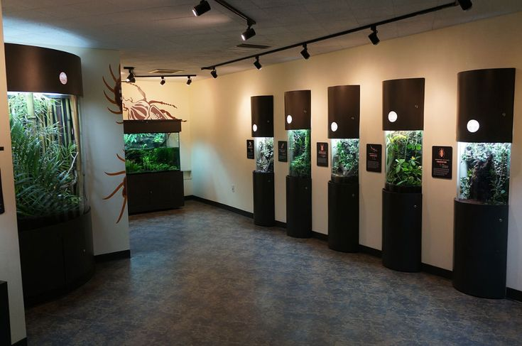

INSECT HOUSE
Step into a world filled with wonder at the Insect House—a fascinating journey into the lives of some of nature’s most incredible and often misunderstood creatures. From the tiniest ants to the most colorful butterflies, the Insect House showcases the diversity and importance of insects in our ecosystems.
What Will You See?
- Butterflies: Wander through our butterfly garden, where hundreds of butterflies flutter around you in a colourful display.
- Exotic Insects: Get up close to rare and exotic species, including giant stick insects, praying mantises, and beautiful moths.
- Interactive Learning Stations: Engage with educational displays and learn about the life cycles, anatomy, and fascinating facts about each insect species. Our expert guides are on hand to answer your questions!
- Encouraging Conservation: Learn how insects are essential to the health of our planet. From helping plants reproduce to recycling nutrients, insects are the unsung heroes of nature. Discover what we can all do to protect these vital creatures.
- Insect Lifecycle Exhibits: Observe insects at various stages of development, from eggs to larvae, pupa, and adults.
WHERE WILL YOU FIND IT
The Insect House is located in the northern most part of the zoo, opposite the Gemsbok.